WEB UIの初期基本設定¶
スマートフォン上のWEBブラウザでも本設定は可能ですが、本書ではパソコンのWEB画面を用いて解説を行います。
使用許諾画面 項から ネットワーク設定画面 項は工場出荷状態の時に必要な手順なので、それ以外の時は 内部時計設定 項からの手順を参照ください。また、ネットワーク設定画面 項までが本装置を初期設定するために必要な最小限の手順で、モバイルルーター的な設定、または単体サーバとしての最小限のネットワーク設定が説明されています。
注釈
本章にて実施している 管理者アカウント(WEB UIの管理者アカウント)設定 項での管理者アカウントの設定はセキュリティ上重要です。その為、クラックされにくくなるようなパスワードを設定してください。
使用許諾画面¶
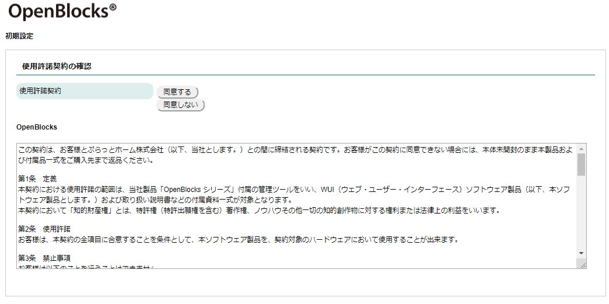
本装置に何も設定されていない出荷直後では、本装置における使用許諾契約書の画面が表示されます。 この使用許諾に合意出来る場合のみ本装置を利用することが出来ます。
画面をスクロールして契約内容を確認の上で、「同意する」を選択して次の画面に進みます。 「同意しない」を選択した場合には、Googleへリダイレクトされます。
管理者アカウント(WEB UIの管理者アカウント)設定¶
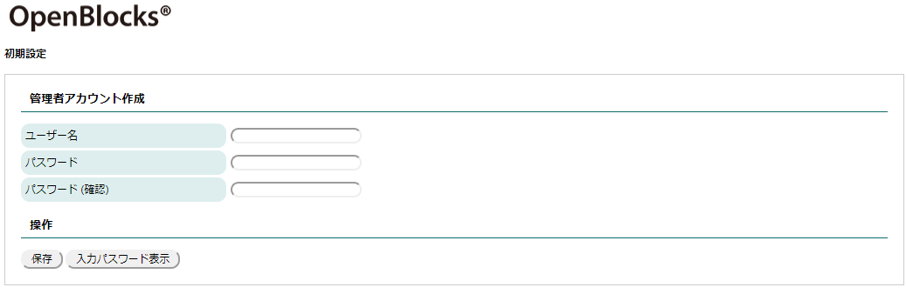
使用許諾契約書に同意いただいた場合、WEB UIの管理者アカウントとパスワード入力画面が開きます。 入力中のパスワードを表示させるには「入力パスワード表示」を押してください。
注釈
ここで入力する管理者のユーザ名は後で変更できない為間違わないように入力してください。このアカウントはrootユーザのパスワード変更権限を持つ為、注意してください。
アカウント情報を設定し、保存ボタンを押すと最初のコンフィグレーション情報が書き込まれます。 コンフィグレーションが書き込まれますと、次回のアクセスからは 使用許諾画面 項と 管理者アカウント(WEB UIの管理者アカウント)設定 項の画面は表示されなくなり、WEBアクセスでの最初の画面は管理者のログイン画面が表示されます。
ネットワーク設定画面¶
OpenBlocksシリーズを利用する時に最小限の設定が必要なネットワーク設定画面です。
OpenBlocks IoT VX2にてモデムモジュールを搭載している製品を用いて説明を行います。本装置をモバイルルーターとして使う構成、本装置をサーバ装置としてモバイル回線を使わない構成の二通りあります。
下図の通り、ネットワーク設定の基本タブの上の部分に本装置の名前を入力する欄があります。
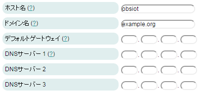
項目 |
説明 |
|---|---|
ホスト名 |
本装置のサーバとしての名前です。 |
ドメイン名 |
本装置の所属するネットワークドメイン名です。 |
デフォルトゲートウェイ |
DHCPにてIPを動的取得する場合には設定は適用されません。 |
DNSサーバー |
DHCPにてIPを動的取得する場合には設定は適用されません。 設定する場合、最低1つ必須となります。2つ以上の設定を推奨します。 |
次の項から モバイルルーター構成 と サーバ構成 で設定方法が異なります。 設定画面は上図と同じで、その下側の設定項目の解説となります。
モバイルルーター構成¶
本項では、本装置をモバイルルーターとして利用する際の設定方法を解説します。
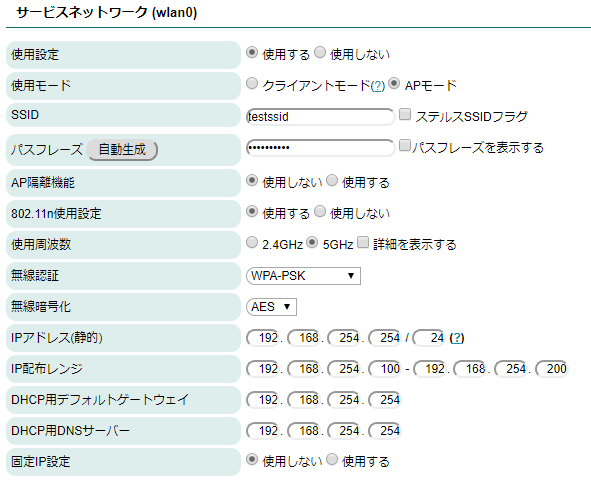
サービスネットワーク(wlanN) |
|
|---|---|
項目 |
備考 |
使用設定 |
「使用する」を選択。 |
使用モード |
「APモード」を選択。 |
使用周波数 |
「2.4GHz」か「5GHz」を選択。 |
SSID |
任意のアクセスポイント名を入力。 SSIDを一般から見えないようにするには、ステルスSSIDフラグにチェックを入れます。 |
無線認証と無線暗号化 |
プルダウンメニューから任意のモードを選びます。 デフォルトの設定のままで使用して問題ありません。 |
パスフレーズ(セキュリティキー) |
8文字以上を設定する必要があります。 |
AP隔離機能 |
APとして起動した際に、クライアント間同士での通信を無効とする機能です。 |
802.11n使用設定 |
APとして使用する場合、802.11nを用いたAPとするかの設定を行います。 |
IPアドレス |
本装置のWLAN向けのIPアドレスとネットマスクのビット数を入力します。 |
IP配布レンジ |
本設定では、DHCPサーバとして動作する為、配布するIPアドレス配布を設定します。 |
DHCP用デフォルトゲートウェイ DHCP用DNSサーバ |
DHCPクライアントに通知するデフォルトゲートウェイとDNSのIPアドレスを設定します。 |
固定IP設定 |
固定IPを配布する際に使用する及び設定を行います。 |
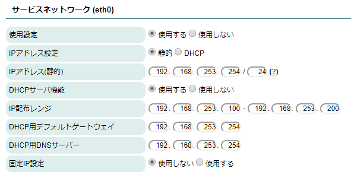
サービスネットワーク(ethN) |
|
|---|---|
項目 |
備考 |
使用設定 |
使用する場合のみ、「使用する」を選択してください。 |
IPアドレス設定 |
Ethernetに設定するIPアドレスを設定します。静的を選択した場合、以下の項目が表示されます。 |
IPアドレス(静的) |
静的アドレスを使用する場合には、本項目欄にてIPアドレスを設定してください。 |
DHCP機能 |
サービスネットワーク(Wireless LAN)と同様にDHCP機能を使用する場合に「使用する」を選択 します。 設定項目は同様に「DHCP用デフォルトゲートウェイ」、「DHCP用DNSサーバ」、「固定IP設定」と なります。 |
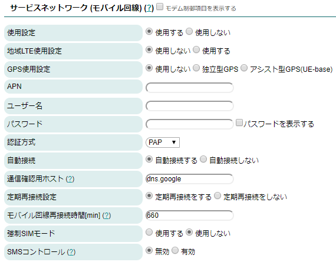
サービスネットワーク(モバイル回線) |
|
|---|---|
「モデム制御項目を表示する」にチェックは不要です。 |
|
項目 |
備考 |
使用設定 |
「使用する」を選択してください。 |
地域LTE使用設定 |
地域LTE網(Band 41)を使用する場合のみ、「使用する」を選択してください。 ※LTEモジュール(NTTドコモ/KDDI)またはBWAモジュールを用いている場合のみ表示されます。 |
GPS使用設定 |
GPS機能を使用しない場合には「使用しない」を選択して下さい。 また、使用する場合には下記の2種類から選択してください。 「独立型GPS」：通信モジュールがGPS衛星を補足し、本製品の位置情報を取得。 「アシスト型GPS(UE-base)」：通信モジュールがGPS衛星を補足しキャリア基地局情報と連動し、 本製品の位置情報を計算。 ※LTEモジュール(NTTドコモ/KDDI)またはBWAモジュールを用いている場合のみ表示されます。 また、本機能はデータ収集時に使用する事が可能となります。尚、SIMを挿している必要があ ります。 |
APN ※LTEモジュール(KDDI)の場合、 項目はありません。 |
キャリア指定のAPNを設定。 |
ユーザ名 |
キャリア指定のユーザ名を設定。 |
パスワード |
キャリア指定のパスワードを設定。 |
認証方式 |
キャリア指定の認証方式を設定。 |
自動接続 |
「自動接続する」を選択すると、起動時から自動でモバイル回線へ接続します。 |
通信確認用ホスト |
モバイル回線がインターネット等に接続されているかを検証するホストを指定します。 尚、LTEモデムにおいて通信確認用ホストに対して一定回数確認が失敗すると再接続処理が行わ れます。 ※本項目が”127.0.0.1”が設定されている場合、通信確認は行いません。そのため、再接続処理は 実施されません。 |
定期再接続設定 |
モバイル回線を定期的に再接続するかの設定です。 |
モバイル回線再接続時間[min] |
モバイル回線接続後に本項目で設定した時間経過後に自動で切断及び接続を行います。 |
強制SIMモード |
モデム搭載時において、モデムデバイスファイル及びSIMカードが見えない場合、OpenBlocks本体の 再起動を行う設定です。 |
SMSコントロール |
ここでは「無効」を設定。 |
以上、一連の設定が完了したら保存ボタンを押します。 保存ボタンを押すと設定が保存され、ネットワーク設定については再起動後に適用されますので、内部時計設定 項に進んでください。
地域LTEは地域BWAと同一です。地域広帯域移動無線アクセス（地域BWA：Broadband Wireless Access）システムは、2.5GHz帯の周波数の電波を使用する無線システムです。
LTEモジュール(NTTドコモ/KDDI)またはBWAモジュール搭載のVX及びEXシリーズにおいて、GPSを使用する場合には、GPSアンテナが必要となります。GPSアンテナご所望の方は、弊社の営業にご連絡ください。
強制SIMモードを有効にした場合、起動時にモデムのデバイスファイルが存在しないまたはSIMカードが認識できない場合には、5分後に本体再起動が発生します。強制SIMモードを有効にし、誤ってSIMカードを抜いてしまって起動した場合等には、5分以内にWEB UIにアクセスし強制SIMモードを解除し再起動してください。
注釈
APモードについては、管理用としての動作を前提としています。そのため、複数のクライアントによる接続性や送受信速度については実運用を想定しておりません。
サーバ構成¶
本項では、本装置をネットワーク内の単体サーバとして利用する際の設定方法を解説します。
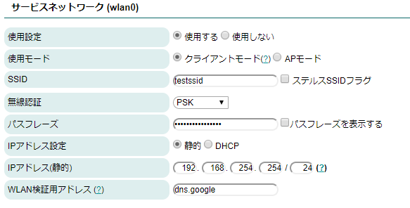
サービスネットワーク(wlanN) |
|
|---|---|
項目 |
備考 |
使用設定 |
「使用する」を選択。 |
使用モード |
「クライアントモード」を選択。 |
SSID |
接続するアクセスポイントのSSIDを入力。ステルスSSIDに対して接続する時はステルスSSID フラグをチェック。 |
無線認証 |
PSK(Pre Shared Key)かEnterpriseから選択します。一般的なAPへのアクセスを行う場合に は、PSKを指定してください。 |
IPアドレス設定 |
静的かDHCPを選択。 DHCPの場合、本装置にDHCPサーバが固定IPを配布するように設定してください。 |
IPアドレス(静的) |
IPアドレスの設定が静的の時、IPアドレスを入力。 |
WLAN検証用アドレス |
WLANの接続状態を監視するためのpingを送出するサーバのIPまたはFQDNを入力。 WLAN上流のping応答可能な装置を設定します。 |
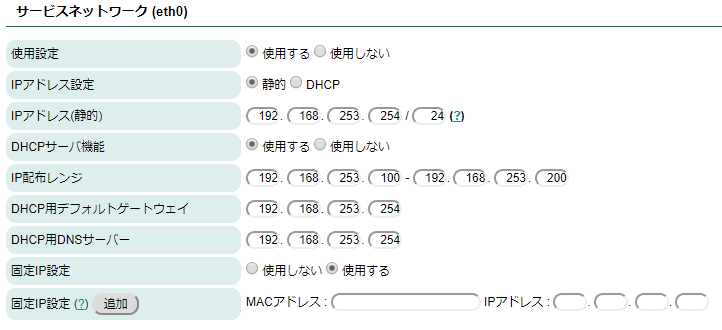
サービスネットワーク(ethN) |
|
|---|---|
備考 |
|
使用する場合のみ、使用設定にて「使用する」を選択してください。また、静的アドレスを使用する場合には、IPアドレスを設定して ください。 DHCP機能を使用する場合には各項目のお設定が必要となります。 |
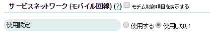
サービスネットワーク(モバイル回線) |
|
|---|---|
「モデム制御項目を表示する」にチェックは不要です。 |
|
項目 |
備考 |
使用設定 |
「使用しない」を選択してください。 |
※「モデム制御項目を表示する」項目については、開発者向けの機能です。そのため、開発者向けガイドを確認してください。
以上、必要な項目を設定したら保存ボタンを押し、 内部時計設定 項に進んでください。
注釈
この項で存在しない上流アクセスポイントのSSIDを登録してしまった場合、一般的な方法で本装置へのアクセスが出来なくなります。
この場合は、本装置を初期状態にして再起動する方法があります。
※ブラウザにWEB UIのセッション情報が残っている場合、以前の状態で残ったまま表示されます。そのため、ログアウトを行い再アクセスすることで使用許諾画面から再度設定してください。
◆OpenBlocks IoT VXシリーズの場合
1, 本製品にUSBコンソールを接続しPCと接続します。
2, 先ず本装置のパワースイッチを押して、本装置をシャットダウンします。
3, シャットダウン後にパワースイッチを押します。
4, GRUBメニューにて”WebUI init boot”を選択します。
5, 本装置のネットワークが工場出荷状態で起動してきます。
6, もう一度、本装置を設定し直し再起動します。
◆OpenBlocks IoT BX及びEXシリーズの場合
1, 先ず本装置のパワースイッチを押して、本装置をシャットダウンします。
2, 本装置のFUNCスイッチ(INITスイッチ)を押しながらパワースイッチを押します。
ステータスインジケーターが一瞬点滅したらパワースイッチを離します。
ステータスインジケーターが黄色点灯したらFUNCスイッチを離します。
3, 本装置のネットワークが工場出荷状態で起動してきます。
4, もう一度、本装置を設定し直し再起動します。
尚、ネットワークが工場出荷状態で起動後、設定せず再起動した場合、以前の設定のまま稼働します。
WLAN APモードの詳細設定(CH設定と国際対応)¶
電波干渉によるチャネル変更や、日本国外でのWLANのAPモード利用における国コード設定が行えます。
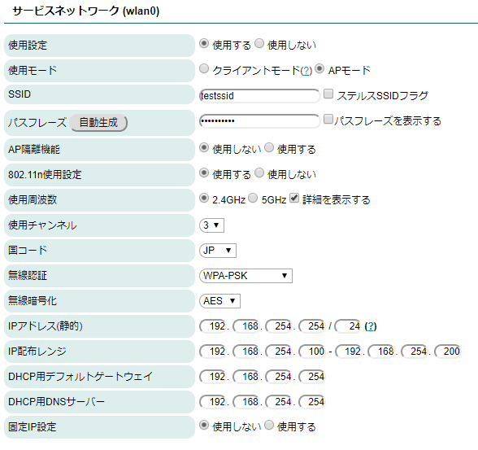
サービスネットワーク(wlanN) |
|
|---|---|
項目 |
備考 |
使用設定 |
「APモード」を選択。 「APモード」を選択すると、使用周波数の右に「詳細を表示する」というチェックボックスが表示 されます。 このチェックボックスにチェックを入れると、「使用チャネル」と「国コード」の設定 項目が現れます。 |
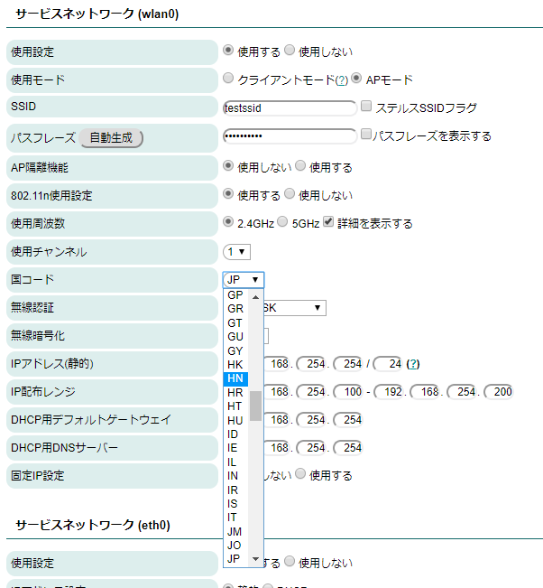
サービスネットワーク(wlanN) |
|
|---|---|
項目 |
備考 |
使用チャネル |
任意のチャネルをプルダウンメニューから選択します。空いているチャネルを見つけるにはスマー トフォンのWLANチャネルアナライザなどのアプリを使うと参考になります。 尚、使用チャネルは802.11n使用設定にも依存します。使用可能なチャネルを事前にご確認くださ い。 |
国コード |
本装置を設置する国に対応する国コードを設定してください。 日本の場合は「JP」となります。 |
Enterprise認証について¶
APモードにおいてWPA-EnterpriseまたはWPA2-Enterprise認証を行う場合、RADIUSサーバーと通信を行います。そのため、通信先のRADIUSサーバー及び通信インターフェースの設定を行います。
尚、OpenBlocks IoT BX/EXシリーズではAPモードでのWPA-EnterpriseまたはWPA2-Enterprise認証については対応しておりません。
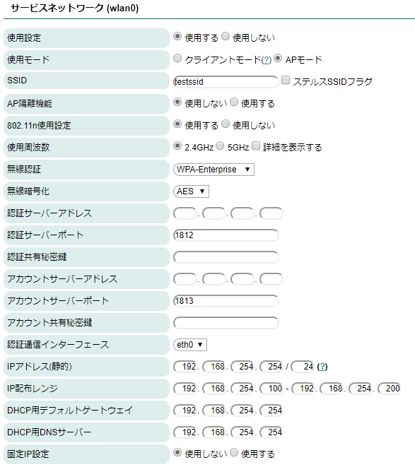
サービスネットワーク(wlanN) |
|
|---|---|
項目 |
備考 |
認証サーバーアドレス |
認証サーバーのIPアドレスを指定します。 |
認証サーバーポート |
認証サーバーに接続する際のポートを指定します。 ※通常はデフォルトの1812から変更する必要はありません。 |
認証共有秘密鍵 |
認証サーバーと通信を行う際の認証共有秘密鍵を設定します。 |
アカウントサーバーアドレス |
アカウンティングサーバーのIPアドレスを指定します。 |
アカウントサーバーポート |
アカウンティングサーバーに接続する際のポートを指定します。 ※通常はデフォルトの1813から変更する必要はありません。 |
アカウント共有秘密鍵 |
アカウンティングサーバーと通信を行う際の認証共有秘密鍵を設定します。 |
認証通信インターフェース |
認証及びアカウンティングサーバーにアクセスするインターフェースを選択します。 |
クライアントモードにおいてWPA-EnterpriseまたはWPA2-Enterprise認証を行う場合、追加のパラメーターを設定する必要があります。また、サポートしているEAP方式はPEAとTLSとなります。
PEAP方式の場合 |
TLS方式の場合 |
|---|---|
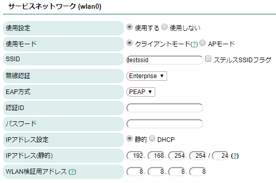 |
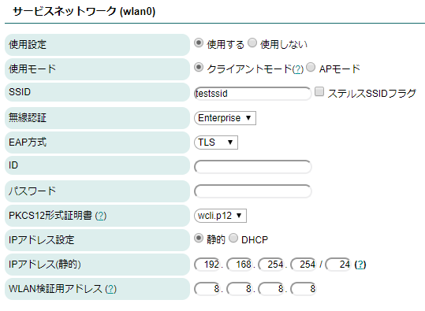 |
サービスネットワーク(wlanN) |
|
|---|---|
項目 |
備考 |
EAP方式 |
PEAPとTLSから選択してください。 |
認証ID(PEAP時) |
Enterprse接続時に用いる認証用のIDを設定します。 |
パスワード(PEAP時) |
Enterprse接続時に用いる認証時のパスワードを設定します。 |
ID(TLS時) |
Enterprse接続時に用いる認証用のIDを設定します。 |
パスワード(TLS時) |
PKCS12形式証明書を展開する際に用いるパスワードを指定します。 |
PKCS12形式証明書(TLS時) |
認証時に用いる証明書を選択します。 認証用の証明書は「ネットワーク」→「WLAN証明書」タブからアップロードを行ってください。 尚、証明書が存在しない場合、存在しない旨のメッセージが表示されます。 |
内部時計設定¶
本製品はRTCのバックアップ電池を搭載しております。しかし、基本的にはNTPサーバとの時刻同期を推奨します。
但し、NTPサーバが利用できない環境での運用の場合には、本装置のWEB UIを表示しているPCやスマートフォンの時刻をWEBブラウザ上で同期できます。
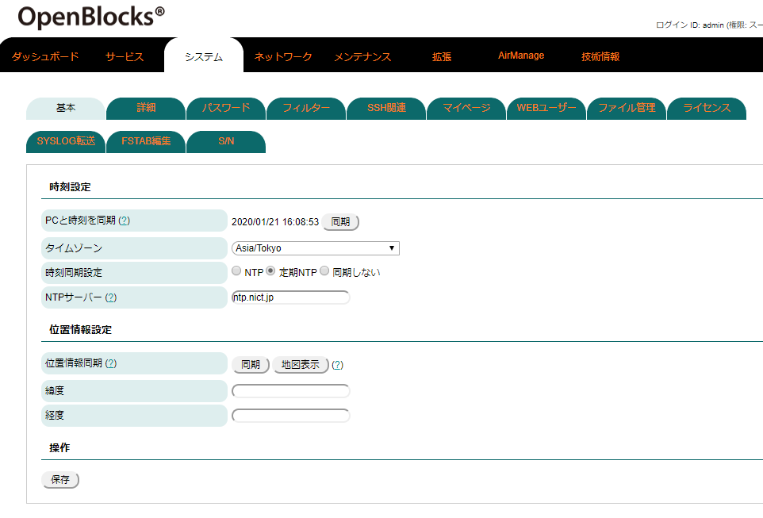
時刻設定 |
|
|---|---|
項目 |
備考 |
PCと時刻を同期 |
同期ボタンを押すとWEBを表示しているPCの時刻を反映します。 |
タイムゾーン |
本装置の設置地域を選択します。 |
時刻同期設定 |
時刻同期の方式を設定します。通常はNTPまたは定期NTPを指定してください。 NTPはNTPサーバと常時通信を行い、時刻補正を行います。定期NTPは定期的にNTPサーバと時刻同期 を行い、時刻同期を行います。 LTEモジュール(NTTドコモ)を搭載している場合、"モデム"項目が表示されモデムから時刻同期を行 うことが可能です。(SIMが挿入されている必要があり、また正しいAPNの設定が必要になります。) |
NTPサーバ(NTP選択時) |
時刻同期の方式を設定します。通常はNTPまたは定期NTPを指定してください。 |
位置情報設定 |
|
|---|---|
項目 |
備考 |
位置情報同期 |
同期ボタンを押すとWEBを表示しているPCの時刻を反映します。 |
緯度 |
本装置の設置地域を選択します。 |
経度 |
時刻同期の方式を設定します。通常はNTPまたは定期NTPを指定してください。 |
編集後、保存ボタンを押すと設定が保存されます。基本的には再起動は不要ですが、使用しているアプリケーションのタイムゾーン情報等の反映があるため、再起動を推奨します。
ここまでが本装置を運用するために必要な基本的な設定項目です。
設定が完了後に、次項のシステム再起動を実施します。
システム再起動による設定項目の反映¶
ここまでが本装置を運用するために必要な最小限の設定項目です。
その他の設定項目については必要に応じて解説部分を参照してください。
本項ではネットワークの基本設定後、システムに設定内容を反映するためのシステム再起動について解説を進めます。
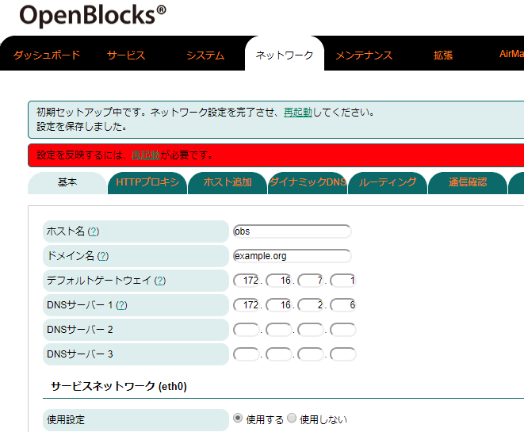
ネットワークの基本設定後、保存ボタンを押した状態になるとWEB画面の上部にシステム再起動を促すメッセージが左図の通り表示されます。
システム再起動には、この赤枠で表示されたメッセージの「再起動」リンクをクリックします。クリックするとメンテナンスメニュー内の停止、再起動タブに表示が切り替わります。
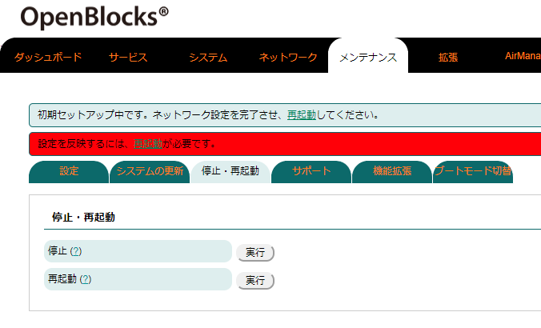
この画面内の再起動の実行ボタンを押します。
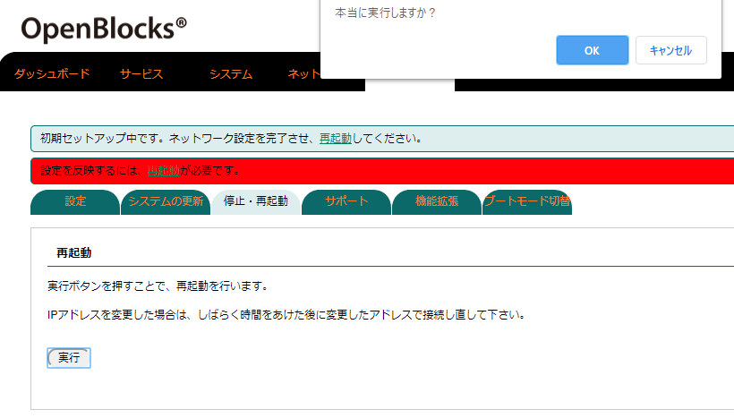
更に再起動の確認画面が現れるので、実行ボタンを押すと、最終確認ウィンドウがポップアップします。
これが最後の確認で「OK」ボタンを押すとシステム再起動が始まります。
再起動はシステムの状態によりますが、表示されている秒数程度お待ちください。
無線経由でWEB UIにアクセスし、本装置がAPモードの場合、再起動後に本装置への再接続が発生します。また、再起動完了後にログイン画面を表示させるにはWEBブラウザからのリロード操作が必要です。
ダッシュボード画面¶
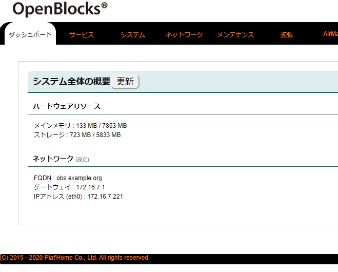
本装置のWEB UIにログインすると最初に表示される画面です。
ここではOpenBlocks IoT Familyのハードウェアリソースやネットワーク情報等を表示します。
最新の情報を表示させるには更新ボタンを押してください。